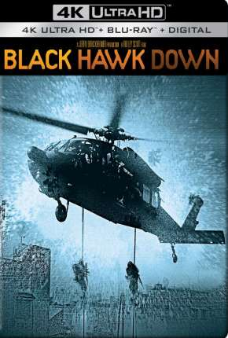

Filmes Populares

Falcão Negro em Perigo
 9.2
9.2
 Favoritar
Favoritar
Em outubro de 1993, durante a guerra civil da Somália, soldados americanos participaram da Batalha de Mogadíscio. Uma força de elite americana foi enviada ao local para capturar generais que obedeciam ao líder Mohammed Farah Aidid. Porém, dois helicópteros UH-60 Black Hawk foram derrubados e a operação, que deveria levar em torno de meia hora, tornou-se uma batalha de 15 horas, terminando com 19 soldados estadunidenses mortos e 73 feridos, além de 1.000 somalianos mortos.
Um Senhor Estagiário
9.2
Favoritar
Começar um novo emprego pode ser um grande desafio, especialmente para alguém aposentado. Tentando voltar ao mercado de trabalho, o viúvo Ben Whittaker, de 70 anos, aproveita a oportunidade para se tornar um estagiário sênior em um site de moda. Ben logo se torna popular entre seus colegas de trabalho mais jovens, incluindo Jules Ostin, a chefe e fundadora da empresa. O charme, a sabedoria e o senso de humor de Whittaker o ajudam a desenvolver um vínculo especial e uma bela amizade com Jules.
Segundo o Evangelho
9.2
Favoritar
Jovem volta às suas origens ao receber a notícia que seu pai, um pastor de igreja, está muito doente. Para resgatar o tempo perdido ele une sua paixão pela música à religiosidade e assim procura recuperar sua fé.